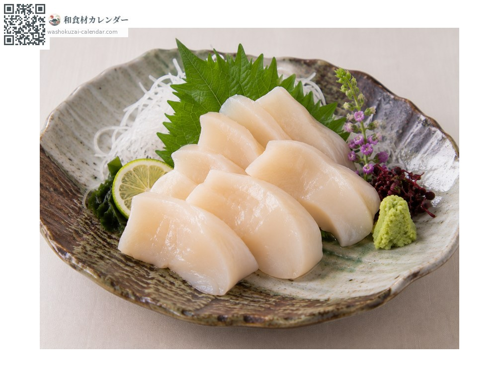
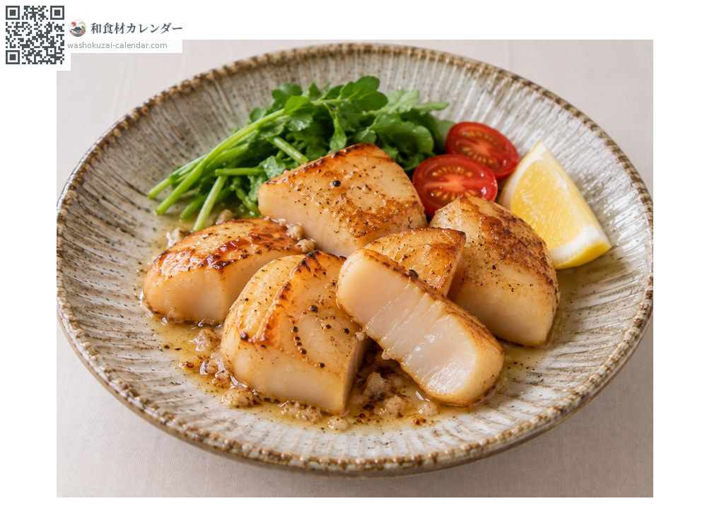
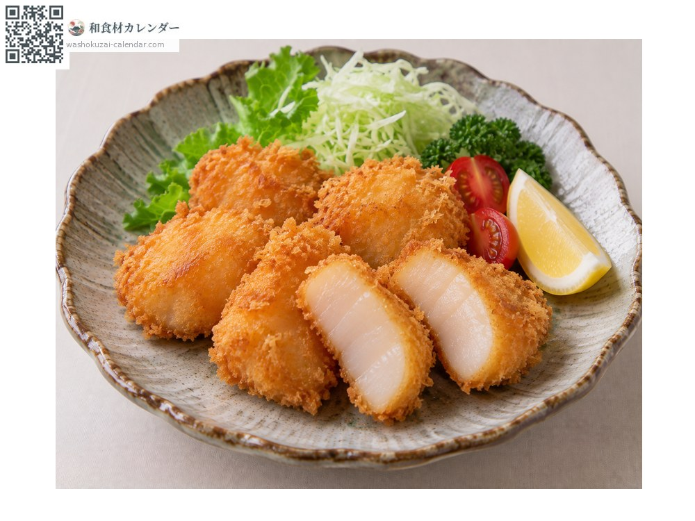
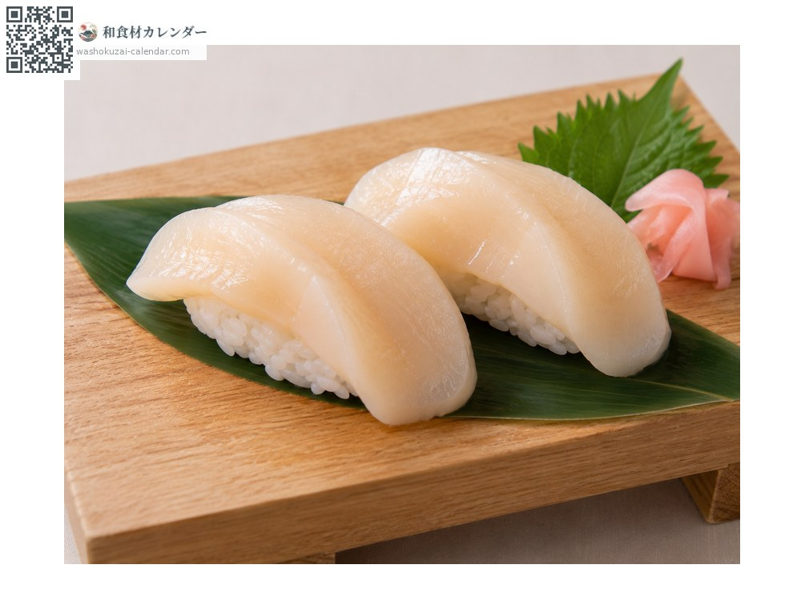

อาหารทะเล
หอยปีกนก (ไทรางิ)
タイラギ たいらぎ tairagi
ชื่ออื่นtairagi, tairagai
อร่อยที่สุดในเดือน ม.ค., ก.พ., มี.ค., ธ.ค.

ช่วงที่อร่อยที่สุด
ม.ค.
ก.พ.
มี.ค.
เม.ย.
พ.ค.
มิ.ย.
ก.ค.
ส.ค.
ก.ย.
ต.ค.
พ.ย.
ธ.ค.
ช่วงอร่อยที่สุดมีจำหน่าย
วิธีปรุง

ซาชิมิ
หั่นเนื้อหอยให้หนา แน่นกว่าหอยเชลล์และหวานเข้มกว่า

ผัดเนย
จี่ผิวนอกเร็ว ๆ ให้ข้างในยังกึ่งสุก

ทอด
ชุบแป้งทอด ความหวานของเนื้อหอยจะเด่นขึ้น

ซูชิ
เป็นหน้าซูชิที่มีค่า
วิธีเลือก
เนื้อหอยใหญ่และหนา ดูใส
วิธีเก็บรักษา
ซับน้ำเนื้อหอย ห่อฟิล์มแช่เย็น ใช้ภายใน 1-2 วัน
แหล่งผลิตหลัก
เกร็ดน่ารู้
ปักเปลือกสามเหลี่ยมขนาดใหญ่ลงในทราย ส่วนที่กินคือกล้ามเนื้อยึดเปลือกขนาดใหญ่ ทะเลอาริอาเกะเคยเป็นแหล่งหลัก แต่ระยะหลังจับได้น้อยจนราคาพุ่งสูง